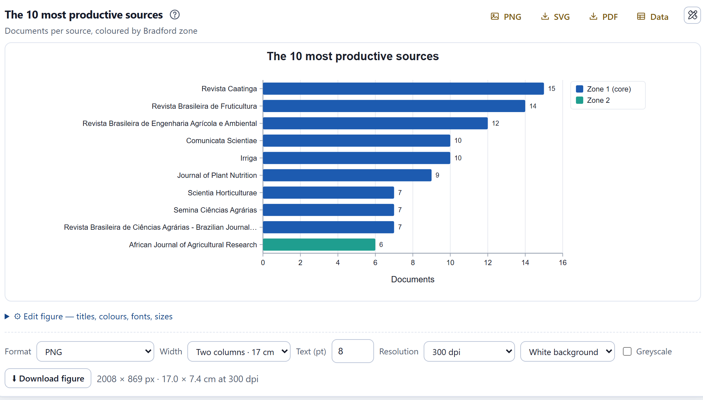
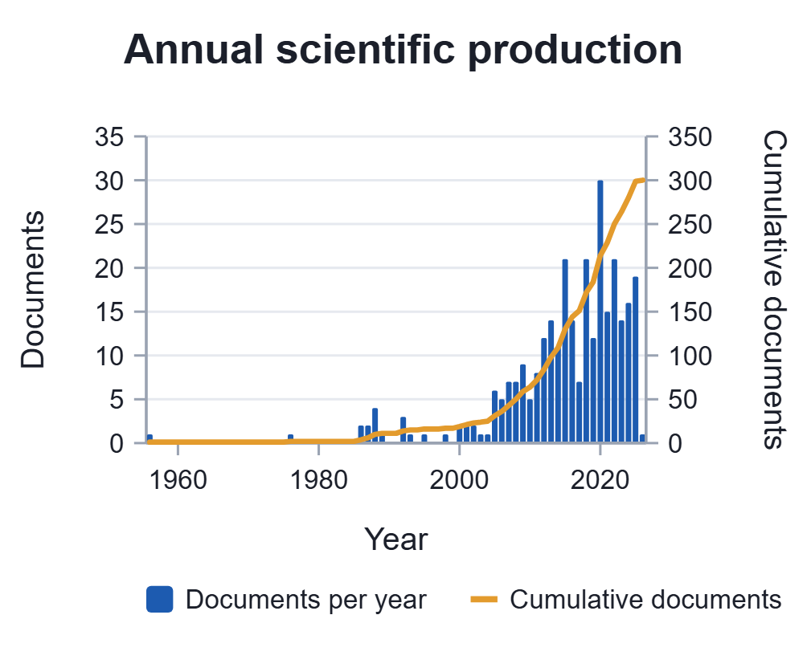
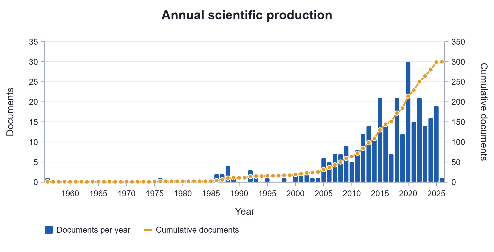
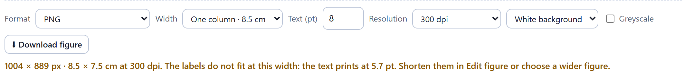
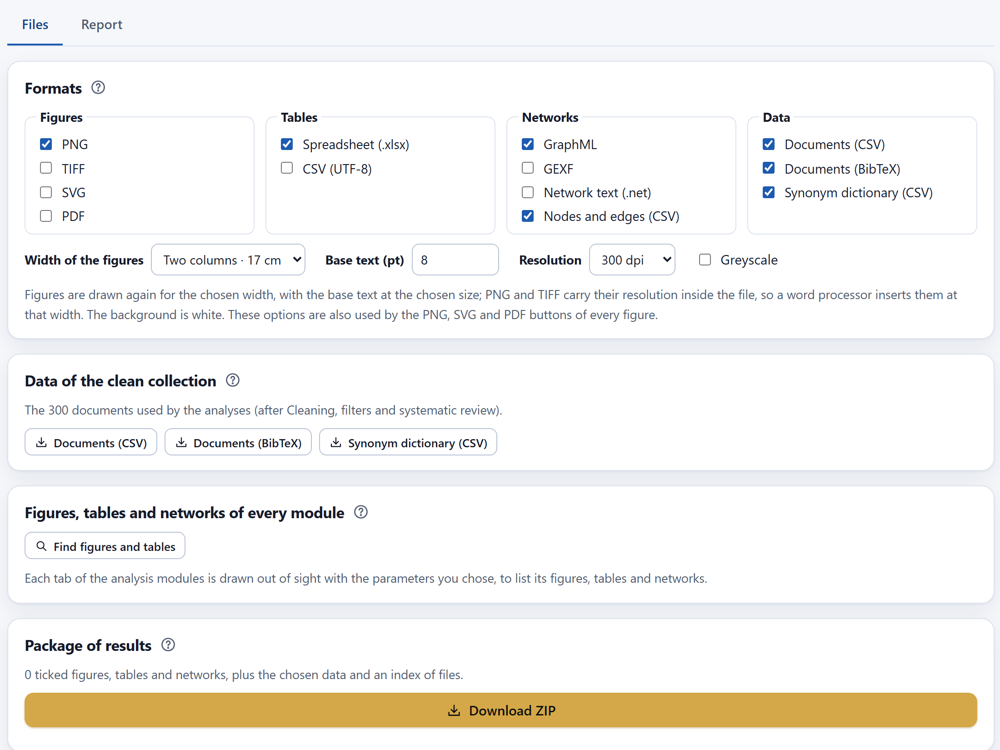
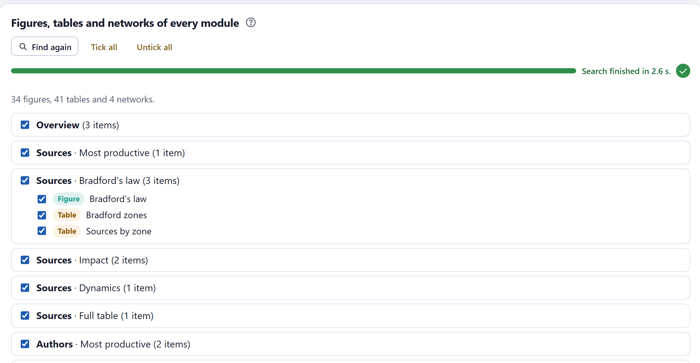
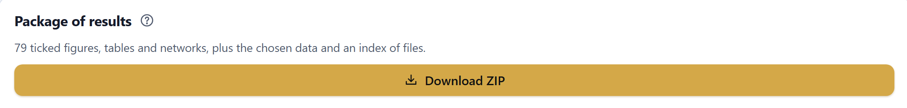
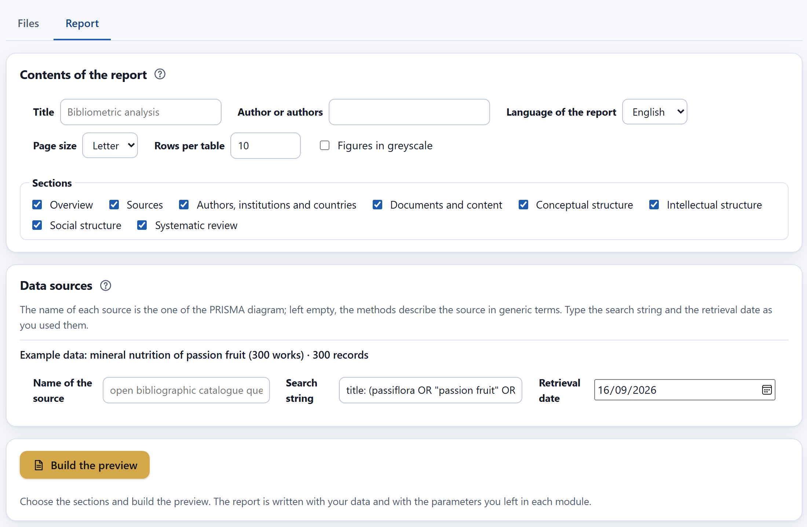
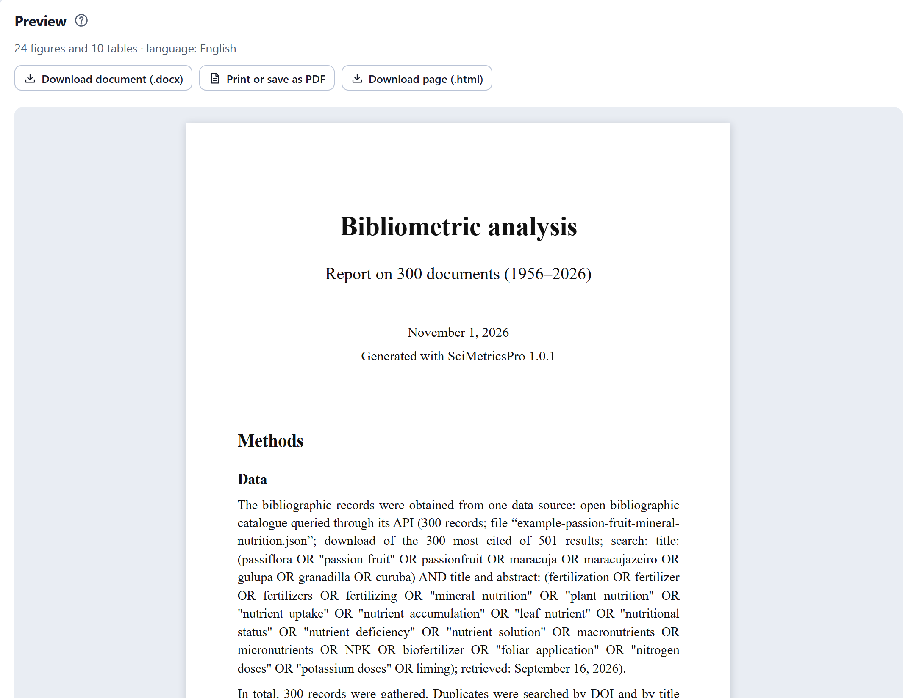
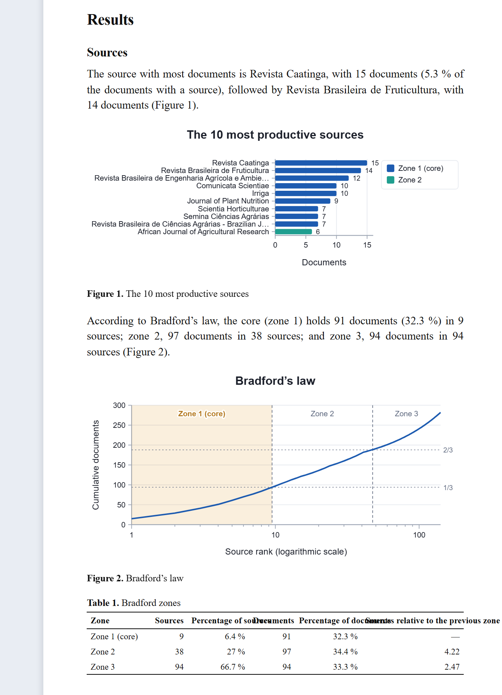

From the analysis to the paper: figures redrawn to the width of one or two columns with the text size and resolution the journal asks for, tables in a spreadsheet, networks for other programs, the clean set in CSV and BibTeX, a ZIP package with everything in order and a report with the methods text written from your data.
Every result of SciMetricsPro can be taken out of the app. What you see on screen—a figure, a table, a network—is downloaded from its own card; the Export & report screen, at the end of the sidebar, gathers everything in a single ZIP file and drafts a report with the methods, the figures, the tables and the references of the methods. Nothing leaves your computer: the files are generated in the browser.
| You want… | Where | Formats |
|---|---|---|
| A figure | The bar of the figure | PNG, TIFF, PDF, SVG, JPG or WEBP. |
| The data of a figure | The Data button of the figure | Spreadsheet (.xlsx). |
| A table | The buttons of the table | Spreadsheet (.xlsx) or CSV. |
| A network | The card below each network | GraphML, GEXF, .net text and CSV. |
| The clean set | Export & report›Files | CSV, BibTeX and the synonym dictionary. |
| Everything together | Export & report›Files | A ZIP with folders and an index. |
| The report | Export & report›Report | Document (.docx), PDF or web page (.html). |
All the figures of the app have the same card. At the top right, the quick buttons PNG, SVG and PDF download the figure with the chosen print format, and Data downloads the table that feeds it. Below the drawing, Edit figure opens the editor and the download bar sets the format of the file.

1 2 3 4The bar has six controls. Format chooses the file type (Table 13.2). Width offers One column · 8.5 cm, Two columns · 17 cm—the most common widths in journals—, a custom width from 2 to 60 cm and Size on screen. Text (pt) is the size of the base text of the printed figure, from 5 to 16 points; Resolution is 300, 600 or 1200 dpi; the background can be white or transparent (PNG only); and Greyscale replaces each color with the gray of the same lightness. Download figure downloads the file and the line on the right says how big it will be. These preferences apply to all figures and to the quick buttons, and they are saved in the project.
| Format | What it is | Use it for |
|---|---|---|
| PNG | Lossless image, with the resolution inside the file. | Documents, presentations and most journals. |
| TIFF | Uncompressed image, with the resolution inside the file. | Journals that ask for it for submission. It is much larger: in the example, 6.2 MB against 0.18 MB for the PNG at 17 cm and 300 dpi. |
| Vector, with text as text. | Printing at any size without losing sharpness. | |
| SVG | Vector and editable. | Touching up the figure in a vector drawing program. |
| JPG | Lossy compressed image. | Quick previews; avoid it for figures with fine text. |
| WEBP | Compressed image. | Web pages. |
Enlarging or reducing a screenshot also changes the size of the text: a figure designed for a wide screen, reduced to one column, ends up with illegible text. That is why the app does not shrink the figure: it redraws it with the width and text size you chose. The base text of the figures measures 11 drawing units; for it to print at p points in a width of w centimeters, the drawing is made with a width of w / 2.54 × 72 / (p / 11) units, and the labels, margins and legend adapt to that space. The file then receives its physical size: in PNG and TIFF, w / 2.54 × dpi pixels with the resolution written inside, so the word processor inserts it at the exact width; in SVG, the width in centimeters; in PDF, a page of that size. At 300 dpi, a 17 cm figure is 2008 pixels wide and an 8.5 cm one, 1004.


The files of Figure 13.1 were read with independent programs. At two columns, the PNG measures 2008 × 869 pixels and carries 300 dpi written inside, exactly what the information line announces; at one column, 1004 × 710 pixels, with the text at 8.0 pt. The PDF of the annual production at 17 cm has a page 481.89 points wide (17 cm), and the SVG, width="17.00cm" with the base text at 7.995 pt. The TIFF of the annual production carries its 300 dpi in the resolution tags; its greyscale version has the three channels equal in every pixel, and the transparent-background one, 88% transparent pixels.
A narrow figure does not always have room for everything. The app first tries to fit it: a long title moves to two lines, the legend is spread over several, the names of horizontal bars that take more than half the figure are cut with “…” and the axis shows fewer numbers. If the labels still do not fit, the drawing is widened and the printed text ends up smaller than requested. In that case, the information line is colored and says at what size the text will print.

The notice can be dealt with in three ways: shorten the names with Maximum name length (characters) in Edit figure, move or remove the legend, or use a larger width. In the example, 23 of the 34 figures come out at one column with the exact text size and one more at 7.9 pt; the rest are mostly maps and networks with many labels or with the legend at one side. Those figures read better at two columns. The PRISMA diagram always keeps its arrangement of boxes and, at one column, prints whole with smaller text.
Check the journal’s instructions: almost all ask for 300 dpi for figures with color or shading and 600 or 1200 for line art, in TIFF, PNG or PDF. If the journal is printed in black and white, download a greyscale version and check that the series can still be told apart. The PDF uses the standard fonts of the format without embedding them; if the journal requires embedded fonts, send TIFF or PNG.
Edit figure — titles, colours, fonts, sizes opens two tabs. Content & colours is specific to each figure: title and subtitle, axis titles, palette or color of the bars, position of the legend, maximum name length and the options of that type of figure (Bradford zones, logarithmic scale, markers…). Style & typography is common to all: theme (the Journal (black & white axes) theme has black-and-white axes), font family, text sizes for titles, axes and labels, bold axis titles and grid lines. A style change applies to all figures, so that the paper has a uniform look.
Tables. Each table has two buttons above its header: .xlsx and CSV. Both download all the rows of the current view, not just the visible page: with the search you typed applied and in the order you chose. The spreadsheet has a formatted header, the first row frozen, filters on each column and numbers as numbers; the CSV is in UTF-8, so that accents read correctly in any program.
Networks. Below each network—co-occurrence, co-citation, coupling and collaboration—the Save the network for other programs card saves the network as it is drawn: the same nodes, their communities with their color, the positions of the layout, the weight and count of each edge and the metrics of each node.
| Button | Content |
|---|---|
| GraphML (.graphml) | XML with the name, community, size, position, color and metrics of each node, and the weight and count of each edge; almost every network analysis program opens it. |
| GEXF (.gexf) | XML with the same attributes and the color, position and size for drawing. |
| Network text (.net) | Plain text: *Vertices with name and coordinates from 0 to 1, and *Edges with their weight. |
| Nodes and edges (CSV) | Two files: one with the nodes and their metrics and another with the edges, their names, their count and their weight. |
The four networks of the example—co-occurrence (50 terms, 1,040 edges), co-citation (50 references, 508), coupling (45 documents, 208) and author collaboration (49 authors, 226)—were opened with a network analysis library independent of the app, in their three formats, with the same nodes, edges and weights. That library recalculated the degree, strength, normalized betweenness, closeness and PageRank of each node, and they agreed with those in the file with differences below 5 × 10−9, which is the rounding to eight decimals.
The clean set. In Export & report›Files, the Data of the clean collection card downloads the documents used by the analyses: with the duplicates merged, the authors, institutions and countries normalized, the filters applied and, if you turned on the check box of Chapter 12, only the included ones.

1 2 3 4 5| Button | Content |
|---|---|
| Documents (CSV) | One row per document with 30 fields: the bibliographic data (authors, title, year, source, volume, pages, DOI, ISSN…), abstract, keywords, affiliations, institutions, countries, citations, references and identifiers. Lists are separated by “; ”. |
| Documents (BibTeX) | One entry per document for a reference manager or a LaTeX document (article, proceedings, chapter, book, thesis or report) with its data, abstract, keywords and citations. The key is the surname of the first author, the year and the first long word of the title (with a, b, c… if it repeats). |
| Synonym dictionary (CSV) | The Cleaning synonyms in the format the app reads back (Chapter 4), for use in another project. |
The CSV of the example has 300 rows and 30 columns; its citations add up to 2,978 and it carries 244 distinct DOIs, the same as the example file read without the app. The BibTeX was read with two independent parsers: the first recovered all 300 entries; the stricter one, 281, because 19 documents lack in the catalog the journal, institution or publisher that BibTeX considers mandatory. Checking it revealed an error: the catalog had a whole affiliation recorded as an author, and its commas made the name invalid. It was fixed: those parts now go between braces.
To take all the results at once, the Files tab builds a single ZIP file with the figures, tables and networks of every module, the data and an index.
The files in the ZIP have orderly names, without accents or spaces, numbered in the order of the modules; the index describes them one by one with their number, kind, module, tab and title.

1 2 3 4
5Each figure in the ZIP comes out with the parameters its tab had and with the style of Edit figure, at the sizes of the Formats card and with a white background. If after the search you change a filter or a parameter, a notice asks you to Find again so that the package reflects what you see.
The search found 34 figures, 41 tables and 4 networks. With the default formats—figures in PNG, tables as spreadsheets, networks in GraphML and CSV, and the three data files—the ZIP has 91 files (15.4 MB): the index, 34 figures, 41 tables, 12 network files and 3 data files. An independent decompression program checked the integrity of each file, and the 41 tables, read with another spreadsheet reader, have the same rows, columns and titles as on screen.
The Report tab drafts a document with your results: a cover page, the methods written from your data and the parameters of each analysis, the results of the chosen sections—each figure and table numbered, with a paragraph that gives its figures—, the references of the methods used and how to cite the app. It is a draft to adapt to your paper or thesis, not a final text.
In Contents of the report you type the title (by default, “Bibliometric analysis”) and the authors, and choose the Language of the report: Spanish or English, regardless of the language of the interface; the figures are also drawn in that language. Page size is letter or A4; Rows per table, from 3 to 50 (10 by default), limits long tables to their first rows with a note; and Figures in greyscale is for a journal printed in black and white. The eight Sections correspond to the analysis modules.
The Data sources card has one line per imported file. The search string and the date of retrieval are not included in the exports: type them here as you used them. Searches made in the search tab of Import already carry both (Chapter 3). The name of the source is the same as in the PRISMA diagram (Chapter 12); if you leave it empty, the text describes the source generically. Everything you type goes into the first paragraph of the methods.

1 2 3 4 5| Part | What it contains |
|---|---|
| Cover page | Title, number of documents and period, authors, date and version of the app. |
| Methods · Data | The sources with their search string, date and records; the duplicates and the threshold; the normalization of authors, institutions and countries; the term field, synonyms and stop words; the filters; and the final set by document type. |
| Methods · Analysis | One paragraph per analysis with its parameters: number of nodes, minimum frequencies, normalization, community algorithm, resolution, periods, number of clusters… each method with its citation. |
| Results | For each section, the main figures and tables, numbered, each preceded by a paragraph with its figures. |
| References and citation | Only the methods cited in the text, in alphabetical order, plus the suggested citation of SciMetricsPro. |
Build the preview draws the figures in the language of the report and assembles the document on the same screen. In the report, figures are 16 cm wide with a 9 pt base text; a figure that would exceed 19 cm in height keeps its arrangement and prints smaller.

1 2 3The preview is the same report that is downloaded, in three forms. Download document (.docx) produces an editable text document, with heading styles, the figures as images at 300 dpi, the numbering of figures and tables as fields that update themselves and the page number in the footer. Print or save as PDF opens the browser’s print dialog; choose saving as PDF there. Download page (.html) saves a page that opens in any browser; in the printout and in the page, the figures remain vector graphics.

1 2 3 4With the eight sections, the report of the example has 24 figures and 10 tables. Its figures agree with those checked in the previous chapters: 396 local citations, 8 clusters in the coupling map, 49 authors and 226 links in the collaboration network. Those that depend on the whole set were counted in the example file without the app: 141 sources and 282 articles, 9 conference papers, 5 theses, 3 chapters and 1 review. The .docx was opened as a package: all its parts are well-formed XML, and it carries 24 images of 1890 pixels (16 cm at 300 dpi), 10 tables, 34 numbering fields—one per figure and table—and a letter page. The check also found misleading wording: the main source had “5.3% of the total”, but that percentage is calculated over the 282 documents with a source. The text now says “of the documents with a source”.
The paragraphs of the report only state figures; they do not interpret or discuss. Read them before copying them. For example, the one for the overview of the example says that the annual growth rate was 0%: the first year (1956) and the last (2026) have one document each, and the formula only compares those two ends. That is the trap explained in Chapter 5. Also check that the parameters described in the methods are the ones you want to report: the report uses those you left on each screen.
If you change the documents after generating the report, a notice asks you to generate it again. With the report downloaded, the results are ready for the paper. The appendices gather, for quick reference, the formats of each database, the formulas of the indicators with their references, a glossary and the solution to the most common problems.